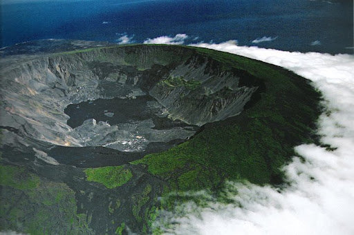

Homepage | Geography & Landforms | Climate & Endemic Organisms | Language & Economy | 3 Special Things To See Or Do In Isla Isabela | Photos Of Isla Isabela | References | Feedback
Between the years 1945 and 1959, a monument called, “The Wall of Tears.” Something that is special about this construction is that it was developed by prisoners. The island used to be utilized as a prison colony by the government to keep their prisoners busy. Subsequently, the administration forced their prisoners to create a rigid stone wall. The working conditions were utterly and excruciatingly relentless. The temperature was extremely hot and humid, so we could imagine how brutal the working conditions were. Today, it serves as a recollection of the dark past of the island. It’s very important to bring water on the way to your adventure. It is estiamted to be approximately 100 meters long. Take a hike there any appreciate the green world full of life around you.
Sierra Negra Volcano is a walking tour of this island. It’s a 4 hour walking tour to see the oldest volcano on this island. Tourists can walk along the rim of the crater to look at plant and animal life. The last eruption for this volcano was in 2005.
-Concha De Perla is a peaceful bay that allows swimmers to gain a perfect view of all of the animals in the ocean. You can watch the sea animals collecting food and flocking with their species.